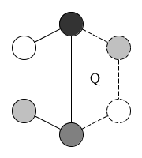
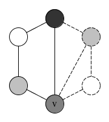

Problem: given a simple polygon \( P \) of \( n \) vertices and a set of diagonals that partition \( P \) into convex quadrilaterals, find the minimum number of cameras required to guard[2] it.
A convex quadrilateral is a 4 sided polygon such that the interior angle at any vertex is not more than 180 degrees. Given such a definition, we can proceed to make the following claim:
\( n \) must be in the form \( 2t + 4 \), where \( t \geq 0 \).
It is easy to see why from Figure 1: 4 vertices are required initially to create the first convex quadrilateral. Since all vertices must define the border of the polygon (from the definition of a vertex), if we want to get one more quadrilateral, 2 more vertices need to be added.
To find the minimum number of cameras required we can do a four colouring of the graph according to the quadrilaterals[1]. We will first prove that choosing the the colour which has the minimum number of nodes, the minimum color from such a coloring is sufficient to guard \( P \). Trivially, we can guard a convex quadrilateral with only one camera, so the minimum color is suitable for guarding it.
 Consider the addition of a successive quadrilateral \( Q \), which must be defined by two existing and two new vertices. Because the two existing vertices are already colored, then the remaining new vertices must be colored differently.
It follows that one of the shared vertices now has the minimum colour, because the number of nodes with the other two colours has increased. This is an important result which will be used in the next step.
 Let \( v \) be a vertex with a minimum color that is shared by both \( Q \) and \( P \). From the definition of a convex quadrilateral, both of its diagonals must lie inside \( Q \), so the line segment from \( v \) to any of the new vertices of \( Q \) must also lie inside \( Q \).
To prove the claim for any \( n \), we assume that it the minimum color is sufficient to guard a quadrilateral \( P \). As we have shown above, adding another quadrilateral \( Q \) and coloring it also makes it guard-able by the minimum color. Hence we have shown by induction that the minimum colour from four colouring the vertices is sufficient to guard such a polygon \( P \).
The upper bound for the number of nodes with the minimum color in a four colouring is, intuitively, the floor of the number of vertices divided by 4 (because the residue discarded by flooring is taken up by one or more of the other colors): $$ \lfloor \frac{n}{4} \rfloor = \lfloor 1 + \frac{t}{2} \rfloor = 1 + \lfloor \frac{t}{2} \rfloor $$
Another way to approach the same solution is to consider the worse case scenario where the successive quadrilaterals keep being added to one side of the existing polygon. We have shown that we can guard two quadrilaterals by placing a camera in a shared vertice, hence we can guard \( t + 1 \) such quadrilaterals with at most: $$ \lceil \frac{t+1}{2} \rceil $$
cameras. (Ceiling is used to correct for \( t = 0 \) and even numbered values.) This is equivalent to \( \lfloor n/4 \rfloor \), and can be verified by analysing cases when \( t \) is an even or odd number, i.e. by plugging in \( t = 2q \) or \( t = 2q+1 \).
Thus the upper bound on the number of cameras required to guard \( P \) is given by \( \lfloor n / 4 \rfloor \). This does not contradict the Art Gallery Theorem's upper bound of \( \lfloor n / 3 \rfloor \) because we have not exceeded the upper bound.